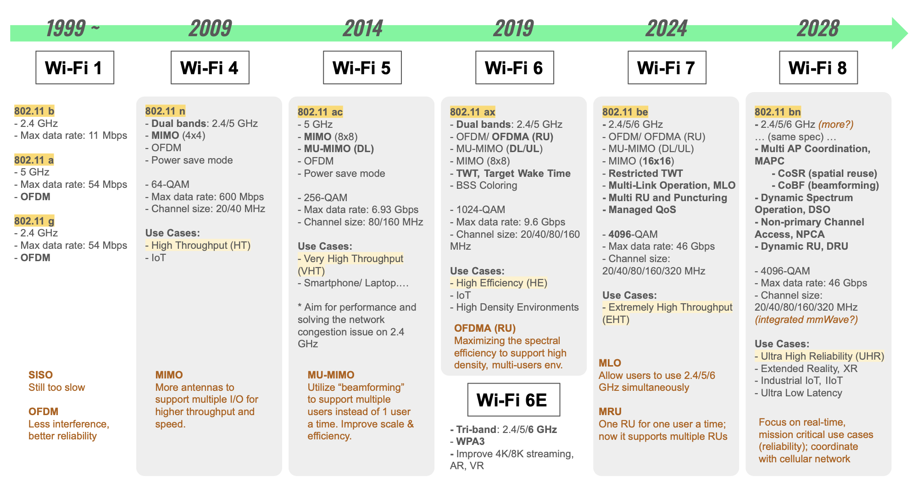
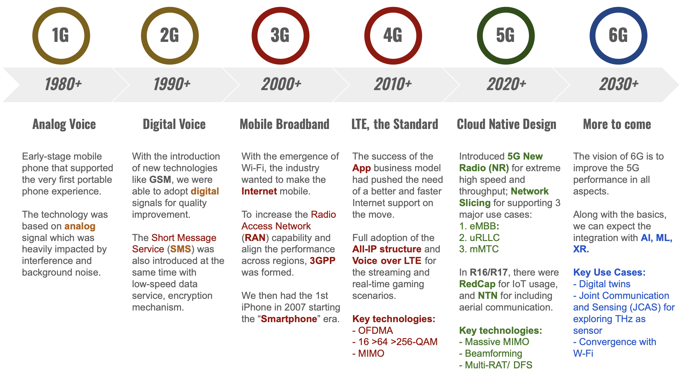
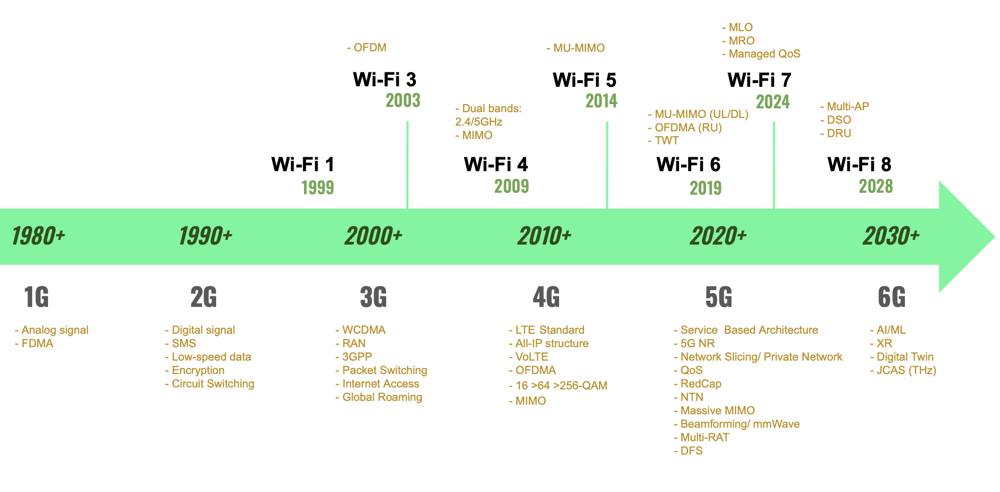

Network 101: The Wireless Era
How about starting your day with a cup of nice coffee and a quick scroll through emails and messages on your smartphone? Nowadays, it is probably hard to imagine life without a network; or to be specific, a life without a wireless network.
Back in the days, I still remember how annoying it was to check a single tiny picture online. You had to dial-up for Internet access using a modem and an ethernet cable, accompanied by those "beep-beep" sounds. Once you were finally online, it would take several minutes to download a standard 500×500 picture, rendering it pixel by pixel. Yet, today, we can see all high-definition pictures almost instantly, within milliseconds.
In this context, how did the Internet evolve? What is the actual difference between 5G/4G and Wi-Fi? Furthermore, why does my ISP keep pushing me to adopt a Wi-Fi 7 router over my old Wi-Fi 5 one? What do all these terms mean?
Keywords: #Wi-Fi #3GPP
Spectrum
Before I dive into the wireless standards, let's talk a bit about the key resource behind the technology: the spectrum.
Spectrum refers to the range of radio frequencies used for transmitting data wirelessly. The radio frequency, ranging from 3000 kHZ to 3000 GHz, is divided into various bands for different purposes.
Some bands are reserved for public or specialized use, such as AM/FM radios, military or emergency services, which must be protected for critical situations. On the other hand, some are allocated for commercial use. For example:
- Licensed spectrum: Mobile operators pay for exclusive rights to provide mobile broadband services like 4G and 5G.
- Unlicensed spectrum: Those are open bands that Wi-Fi technology is using. As those are free for anyone, it's easier to encounter interference and traffic congestion.
Wi-Fi Standards
Let's start with Wi-Fi. There are two key entities to know in terms of Wi-Fi standards:
-
IEEE (sound: I triple E): sets standards such as
802.11 X -
Wi-Fi Alliance (WFA): runs industry interoperability tests for
Wi-Fi Xdevices
The diagram below explains the evolution of Wi-Fi: 
Pre-Wi-Fi 4 era
The first 802.11 standard appeared in 1997, and it has continued to evolve ever since.
We can regard Wi-Fi 4 as the turning point of the modern Wi-Fi. Before its arrival, the overall user experience was simply "SLOW". The backbone of pre-Wi-Fi 4 technology was SISO (single input single output). At this stage, the focus was merely making the technology functional enough for people to tolerate. The overall quality of service was far from the business-grade from today's point of view. For example, making a VoIP call would have suffered severely from high latency and jitter.
Eventually, OFDM was introduced to mitigate interference, and significantly improve the service reliability. While Wi-Fi 3 (802.11 g), released in 2003, brought OFDM to 2.4GHz in addition to 5GHz, the digital world was growing fast too. The same year we had welcomed the launch of Skype, MySpace and Facemash which had become Facebook in 2004.
Chasing after the speed, the High Throughput era
This was the golden age of the digital boom. Following the launch of the first iPhone in 2007, we suddenly had mind-blowing apps in the little screen right in our pockets. The vision of a true connected world seemed within reach. To that end, we had to upgrade the existing architecture for the growing traffic.
To deliver the ultimate user experience, developers focused on two major approaches:
- Enhancing capacity
- From dual bands to tri-band: 2.4/ 5/ 6GHz
- From 64-QAM to 4096-QAM
- Max data rate from 11 Mbps to 46 Gbps
- Channel sizes expanded from 20 MHz to 20/40/80/160/320 MHz
- SISO to MIMO (4x4 to 16x16)
- Improving efficiency & reliability
- OFDM
- MU-MIMO (Downlink, Uplink)
- OFDMA with resource units (RU)
- TWT, rTWT for better power management
- Multiple Link Operation (MLO)
- Managed QoS & Puncturing
- Others
- mandatory WPA3 since Wi-Fi 6E for protecting the new release 6GHz
Though the marketing always promoted the evolution as providing "High to Extremely High Throughput", it was actually the "efficiency improvements" that made the seamless streaming in a crowded stadium come true.
From Wi-Fi 4 to Wi-Fi 7, the Wi-Fi technology has evolved to provide a stable, reliable, fast Internet user experience even in high density environments. With a solid foundation supporting high-resolution streaming, real-time gaming and AR/VR, we are ready for the next generation digital experience.
Future forecasting: the Ultra High Reliability
Thought I missed something? Yup, the Internet of Things (IoT).
Besides the above speed talk, we had power saving mechanisms such as TWT for saving the battery life of edge devices. We also built a robust infrastructure capable of supporting a massive amount of edge devices staying online and communicating to each other simultaneously.
The current architecture might be sufficient for use cases like smart homes, smart stadiums, or even smart cities. However as we recruit more and more devices into our smart ecosystems, we must ensure the connection is as reliable as possible. Especially in scenarios like autonomous vehicles or critical life-saving medical applications, we cannot tolerate any latency as it is directly tied to human safety.
As a result, the focus of the next generation Wi-Fi (802.11 bn) has shifted from throughput to reliability. Although the Wi-Fi alliance has not yet finalized the standard, we can already foresee a few key targets:
- Multi-AP Coordination for enhanced coverage and efficiency
- Coordinated Spatial Reuse (CoSR)
- Coordinated Beamforming (CoBF)
- Optimized spectrum utilization to boost throughput
- Dynamic spectrum optimization (DSO)
- Non-Primary Channel Access (NPCA)
- Seamless convergence with cellular network to better user experience
The primary use cases will include Industrial IoT for building private, high-uptime environments and Extended Reality (XR) for more immersive digital experience. Moreover, with the building blocks established by Wi-Fi 8, we can expect a seamless experience in telemedicine or mission-critical operations in remote areas.
What else might appear in the future Wi-Fi? Artificial Intelligence, Machine Learning for network optimization, and even more frequency bands. Can't wait to see it!
Wi-Fi EasyMesh
Here I want to mention "Mesh" a bit. The emergence of Mesh technology was driven by connectivity issues under heavy traffic and obstructed environments (also commonly known as dead zone/ blind spot).
Unlike a traditional Star topology, mesh networks enable seamless roaming to expand the coverage and build a stable, reliable connection. The underlying technology is smart enough to dynamically determine the best route and signal for your end-devices.
Before WFA released "EasyMesh" (802.11k/v/r) in 2018, there were many different mesh systems in the market which were incompatible with each other. The launch of EasyMesh is for solving the issue of interoperability.
The latest EasyMesh specification (v6.1) already supports Wi-Fi 7 key features including Managed QoS and MLO. We can expect more for the Multi-AP in the upcoming Wi-Fi 8.
Okay, we will have more mesh talk in a future post on smart home. Now, let's move on to the other pillar of wireless connectivity: Mobile Broadband.
Mobile Broadband (MBB) and 3GPP
When we're talking about Wi-Fi, it's all about the indoor scenarios or use cases in specific spaces. But we also want to enjoy the seamless Internet access while on the move. This is where mobile broadband enters the picture.
Below is the evolution of mobile network: 
Pre-Internet Era: 1G to 2G
Unlike Wi-Fi technology, the origin of mobile broadband was aimed at providing a portable "phone" service. Before 1G, people had to find a landline for calling others. With the arrival of 1G, we saw the birth of "brick phones", extremely huge mobile phones solely for making calls. The technology was based on analog signals which were easily compromised by interference and background noise.
However, if you have ever seen a first generation cell phone, you know it's impossible to be truly portable due to its size and weight. The industry then spent years optimizing the hardware until we finally reached a perfect portable "feature phone" for business elites and bosses to use. (Yes, it was still expensive.)
At that time we had 2G networks which improved not only the voice quality via the adoption of digital signals, but also the short message service, low-speed data service and basic encryption of our data.
A standardized mobile network: 3G and 4G
People loved the idea and embraced the convenience of mobile connectivity. Around the same time, we had the Wi-Fi 1 released. Having the Internet at home, people naturally wanted to have the Internet on their mobile phones. The strong demand led to the birth of 3G.
The breakthrough of 3G was not merely about Internet access. For the first time, a dedicated organization, 3GPP (The 3rd Generation Partnership Project), was formed for the global mobile broadband standards. Through their efforts, mobile operators finally worked on removing the barriers for global roaming. Users could finally enjoy the Internet access with their own mobile phone across different technical infrastructures worldwide.
Soon after, the first MBB standard, 4G LTE, was released. While inheriting the design of "Radio Access Network (RAN)" from 3G, it was refactored to All-IP architecture. The shift was introduced with services updates including scalable bandwidth, VoLTE, OFDMA, and MIMO. The purpose of the structural change was for catching up the explosion of software services.
Ring a bell? Yes, the iPhone story I mentioned in the Wi-Fi section. The launch of the first iPhone was truly a game changer that altered the market for good. We could now play games, stream movies, manage productivity tasks all on our phone. These market demands accelerated the pursuit of faster speed and higher throughput.
5G, a unified and more capable air interface
Before 5G, the path of MBB development was primarily on the end-user experience with phones. Yet, as shared in the Wi-Fi introduction, we're moving toward a fully connected world involving a broader range of devices. In this new landscape, the requests of the network expanded to reliability, stability, and adaptability to a variety of specialized environments.
The famous "5G Triangle" defined the diverse services:
-
Enhanced Mobile Broadband, eMBB: Continue on improving the speed and throughput which could be deployed fast for commercial use.
-
Ultra Reliable and Low Latency, uRLLC: Designed for mission critical applications including autonomous vehicle, remote surgery where milliseconds counts.
-
Massive Machine-Type Communication, mMTC: Industrial IoT focused, specifically supporting a massive number of connected devices with high power efficiency.
To deliver the next generation user experience, the 5G standard has released a series of changes.
R15, the foundation
First of all, 5G has further decoupled the low layer/ hardware structure toward a service-based architecture (SBA). This enabled the Standalone (SA) 5G network where the architecture is entirely different from the legacy system. Instead of relying on vendor-specific hardware, operators can now adopt Commercial Off-The-Shelf (COTS) servers combined with a software defined transport network base station. The new framework allows for a more flexible and cost-effective structure. However, considering the deployment cost and practical realities, operators could choose a mixed infrastructure, Non-Standalone (NSA), for the 5G experience in the short term by leveraging the existing 4G core network. (If you're interested in how the decoupling and structural changes, you may refer to the "OpenRAN".)
This new structure offers an end-to-end flexibility or "Network slicing". The feature allows operators to deploy a true "Private Network". The demands usually come from the public sectors like first responders or law enforcement for ensuring the dedicated capacity for mission-critical operations.
Another major leap in 5G was the expansion into more bands and wider bandwidth, categorized as below:
-
Sub 6 (+Massive MIMO), FR1: Excellent penetration, wide coverage, long distance with more cost-effective infrastructure.
-
mmWave (+Beamforming), FR2: Poor penetration, high power consumption, but with extremely fast speed and high throughput.(Note: FWA uses mmWave.)
R16 enhancement
- Unlicensed spectrum
- Advanced power saving and mobility
- High precision positioning
- Sidelink for vehicle to experience (V2X) use cases
- Mission critical design
R17 expansion:
-
Reduced Capabilities (RedCap) aka 5G NR-Lite: Focusing on IoT mid-tier (e.g. smart grid, wearables, sensors), filling the gap of the major three scenarios.
-
Non-terrestrial networks (NTN): Adding aerial communication such as satellites; operators including StarLink, Amazon Leo.
5G-Advanced (R18~) and 6G forecast
Features released from R18 onwards were called "5G Advanced". This signified the foundation architecture is completed, the focus has shifted toward enhancement that will bridge to the next generation, 6G.
The mobile broadband system will be smarter on allocating and aggregating the frequency resources for low latency and reliability. The notorious network issues experienced while on the move are expected to be resolved, guaranteeing the QoS for advanced applications.
- AI/ ML native
- Digital twins
- Joint Communication and Sensing (JCAS) for exploring THz as sensor
- Convergence with Wi-Fi
- Sustainability
Admittedly, the gap between the exciting vision and our current reality remains vast. There might be more regulation hurdles, hardware upgrades to be addressed before we live in a true connected world. But we're moving forward.
(You may learn more details via Qualcomm slides.)
Conclusion

Whoa! What a long journey. After a brief tour of wireless technology, it is clear that the trend has expanded from user-centered use cases to being industrial-scenario focused.
Additionally, the structural revolution of mobile broadband carries a bold ambition on breaking down the proprietary barriers of legacy manufacturers to an unified, software defined platform for all.
Last but not the least, we can see that in the next generation of technology: 6G and Wi-Fi 8, there will be an ever deeper convergence of the two in order to fulfill the vision of a real connected society.
So, how will our home router adapt to the new wireless technology? In the next post, I'll introduce the building blocks of modern CPEs and the potential evolution of the genre. For example, could we see a "CPE version of app store"?
Stay tuned!
Reference
- Wi-Fi
- Mobile Broadband